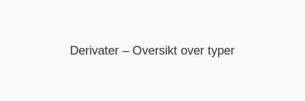
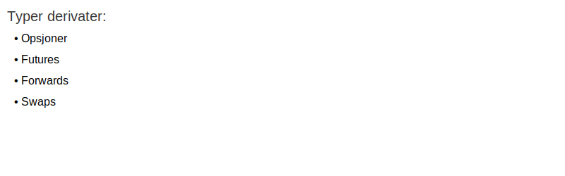

Derivater er finansielle kontrakter hvis verdi er avledet fra underliggende eiendeler, indekser eller andre referanseverdier. Derivater brukes til risikostyring, spekulasjon og effektiv kapitalallokering i norsk regnskaps- og finanspraksis.

Definisjon og grunnleggende konsepter
Et derivat er et finansielt instrument som gir rettigheter og forpliktelser basert på verdien av en underliggende eiendel. Avhengig av kontraktens vilkår kan derivater benyttes til å sikre seg mot prisendringer eller til å spekulere i markedsbevegelser.
Underliggende eiendel, utløpsdato, avtalt pris (strike) og kontraktsstørrelse (notional) er sentrale elementer i samtlige derivater.
Typer derivater

| Type derivat | Beskrivelse | Vanlige anvendelser |
|---|---|---|
| Opsjoner | Rett, men ikke plikt, til å kjøpe eller selge en eiendel til avtalt pris | Risikostyring, ansattopsjoner |
| Futures | Standardisert kontrakt om kjøp eller salg av eiendel på en fremtidig dato | Råvaresikring, spekulasjon |
| Forwards | Skreddersydd OTC-kontrakt om kjøp eller salg på et fremtidig tidspunkt | Tilpasset pris- og volumgaranti |
| Swaps | Avtale om å bytte kontantstrømmer mellom parter (for eksempel rentebytte) | Valuta-, rente- og kredittsikring |
Regnskapsmessig behandling
Derivater innregnes og måles i henhold til IFRS 9 og relevante NRS.
- Første gangs innregning: Virkelig verdi på kontraktsdato.
- Etterfølgende måling: Virkelig verdi gjennom resultat eller totalt resultat (OCI) avhengig av forretningsmodell.
- Sikringsbokføring: Dokumentasjon og effektivitetstesting ved sikringsformål.
Vurderingsmodeller
Vanlige modeller og metoder for verdsettelse av derivater inkluderer:
- Mark-to-market – daglig oppdatering til markedsverdi.
- Black–Scholes – prisingsmodell for europeiske opsjoner.
- Binomialmodell – diskret valuering med mulighet for amerikansk utøvelse.
- Monte Carlo-simulering – numerisk metode for komplekse og eksotiske derivater.
Praktiske eksempler
- Valutasikring: En importør av amerikanske varer bruker valutaforwards for å låse valutakurs.
- Renteswap: Et selskap bytter flytende rente til fast rente på lån.
- Olje-futures: En produsent selger olje for levering om tre måneder for å sikre salgspris.
Risiko og styring
- Markedsrisiko – eksponering mot prisendringer i underliggende eiendel.
- Kredittrisiko – risiko for at motpart ikke oppfyller forpliktelser.
- Likviditetsrisiko – mulighet for vanskeligheter ved avvikling av posisjoner.
- Operasjonell risiko – prosess- og systemfeil knyttet til derivathandel.
Oppsummering og videre lesning
Derivater gir kraftfulle verktøy for risikostyring og kapitalforvaltning, men krever grundig forståelse av verdsettelse, bokføring og risikostyring.
Se også:
For mer om finansielle instrumenter i regnskap, se Hva er Finansregnskap?.